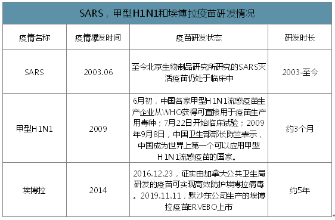

| |
与新冠病毒同属于冠状病毒科的SARS病毒和MERS病毒均有已经进入临床阶段的疫苗。
尽管SARS疫苗由于缺乏病例无法继续开展后续临床试验而未能获批上市，
而MERS疫苗目前全球仅有临床1期数据，
但至少从两者的动物模型试验情况及临床1期数据看，
产品均未出现严重不良事件并显示出不错的阳转率和细胞免疫反应。
|
SARS疫情爆发至今北京生物制品研究所研制的SARS灭活疫苗仍处于临床研究的状态。
同样的埃博拉疫苗的上市也经历了长达5年的时间。
但甲型H1N1的研发过程只有三个月。
疫苗研发过程主要限速步骤有两个方面：
①对病毒的认知：只有认知较清楚，在获得毒种的基础上才可以快速开展研发。
②临床试验：疫情的爆发是有时效性的，且临床需要较大的样本数量。
|
 |
|
从数据来看，面对未知的病毒时，
疫情的爆发到疫苗研制成功和上市，往往会经历一个很长的时间周期。
通常情况下，疫苗研制成功时已经很可能错过了疫情的周期。
疫苗研发是一项需要高投入和长时间的项目。
但我们距离成功研发疫苗的万里长征已经成功迈出了第一步。
|